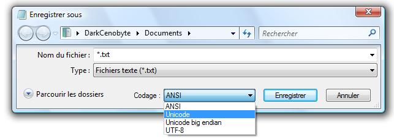
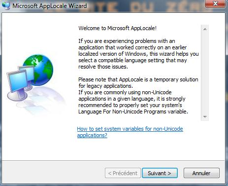
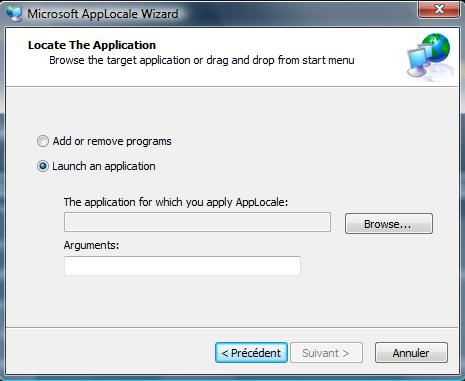
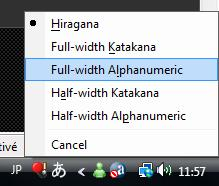

Vous avez peut-être déjà voulu jouer à des jeux japonais, ou utiliser des applications contenant des caractères japonais, mais ils ne s'affichent pas normalement sur votre écran ?
Développée par le Consortium Unicode, l'Unicode est une norme informatique, très utilisée actuellement.
Si vous voulez tous les détails techniques, allez lire ceci.
Cette norme est utilisée pour le codage des textes, vous l'avez peut-être déjà utilisée si vous utilisez beaucoup le traitement de texte :

Cependant, certains programmes comprenant des caractères japonais n'utilisent pas la norme Unicode, ce qui fait que normalement, le programme s'affiche correctement sur les OS japonais uniquement.
Par ce tuto, je vais vous apprendre comment faire pour afficher correctement les textes de ces programmes.
Maintenant, nous allons télécharger un petit logiciel créé par Microsoft : AppLocale. Il permet justement d'afficher les caractères non-Unicode des programmes ^^ , vous pouvez le télécharger en cliquant ici.
(Téléchargez-le en version anglaise.)
Installez-le, puis allez dans : menu démarrer -> Tous les programmes -> Microsoft AppLocale.
Et cliquez sur AppLocale.
Il se lance :

Faites Suivant, vous arrivez à une nouvelle fenêtre :

Cochez Launch an application puis cliquez sur Browse....
Maintenant, sélectionnez l'exécutable du programme japonais, puis validez.
Cliquez sur Suivant.
Dans le déroulant Language of the application, allez tout en bas et cochez japonais (
).
Faites Suivant et cochez la case Create a shortcut to always run this application with AppLocale.
Voici enfin la dernière étape qui consiste à faire les derniers réglages, et à profiter de l'application ou du jeu japonais :D ...
Allez dans le menu démarrer -> Tous les programmes -> Microsoft AppLocale.
Et cliquez sur le nom de votre jeu (par défaut, sur le nom de l'exécutable du jeu).
Maintenant il se lance ; si possible, essayez de le lancer en mode fenêtre, puis pendant qu'il est sélectionné, cliquez gauche sur FR dans la barre des tâches, puis cliquez sur JP Japonais (Japon).
Deux nouvelles icônes apparaissent, cliquez sur celle de droite.
Un menu apparaît :

Maintenant, si votre jeu ne nécessite pas de textes, laissez en Hiragana (vous pouvez aussi le mettre en Full-width Katakana ou en Full-width Alphanumeric). Si vous êtes par exemple sur un MMORPG, ou un jeu où vous pouvez discuter avec d'autres joueurs en ligne, afin de discuter entre français, mettez en :
Full-width Alphanumeric
afin de pouvoir écrire avec votre clavier des lettres normales.
Et maintenant, vous pouvez voir s'afficher correctement les caractères de votre jeu ^^ .
Maintenant, vous pouvez afficher les caractères non-Unicode de vos jeux / logiciels japonais. ^^